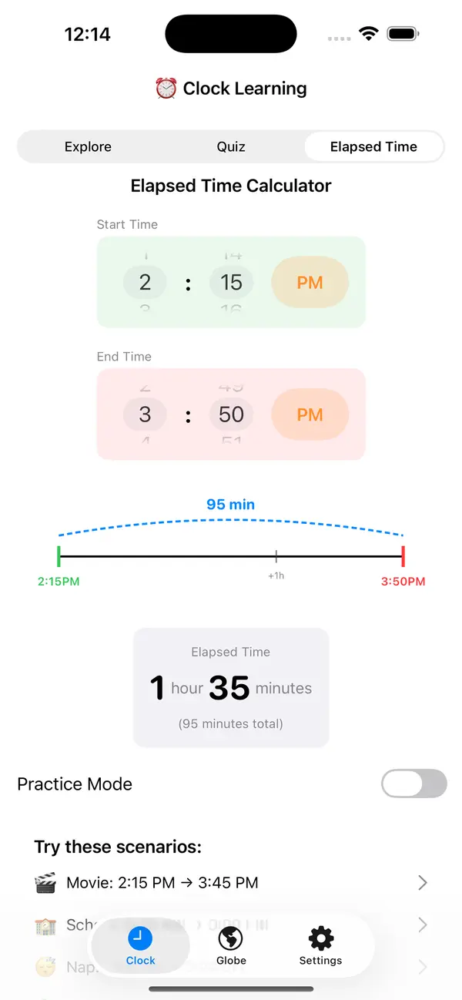
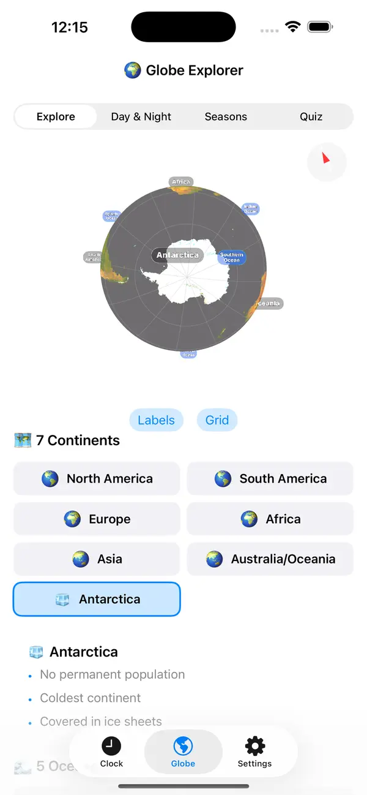
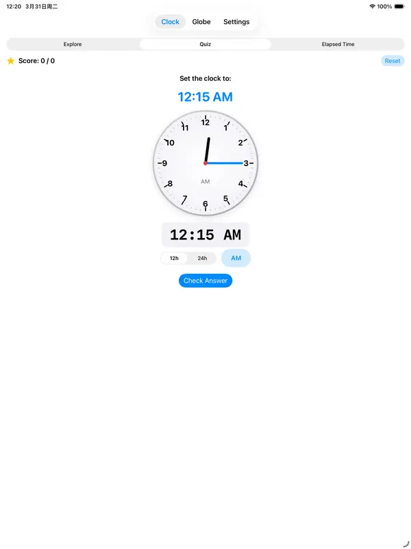

تعلّم قراءة الوقت واستكشف العالم — كل ذلك في تجربة تفاعلية واحدة.
يجمع Tick Tock Earth وحدتين تعليميتين عمليتين: ساعة عقارب/رقمية تفاعلية بالكامل، وكرة أرضية ثلاثية الأبعاد مذهلة بصور من ناسا — مع محاكاة الليل والنهار ومدارات فصلية واختبارات.
معاينة التطبيق
آيفون






آيباد




وحدتان في تطبيق واحد
كل وحدة مستقلة بذاتها وتضم أدوات تفاعلية وأدوات مساعدة بصرية وأوضاع اختبار.
🕐 ساعة عقارب تفاعلية
اسحب عقرب الساعات والدقائق لضبط أي وقت. تتحدث الشاشة الرقمية المتزامنة فورًا. افهم نظام AM/PM والعلاقة بين العقارب والأرقام على القرص.
⏱ حاسبة الوقت المنقضي
حدّد وقت البداية والنهاية لترى فورًا المدة المنقضية. أداة عملية لفهم الفواصل الزمنية والفروق بين الأوقات.
🌍 كرة أرضية ثلاثية الأبعاد بصور ناسا
أدر كرة أرضية ثلاثية الأبعاد عالية الدقة وملونة. المس أي قارة أو محيط للانتقال إليه وقراءة معلومات سريعة. شغّل شبكة خطوط الطول والعرض والطبقات المُسمّاة.
🌗 محاكاة الليل والنهار
كرة أرضية بأسلوب تعليمي مثبتة على ميل محور الأرض 23.5° مع قطب محور مرئي. شغّل ضوء الشمس لترى كيف يخلق الدوران الليل والنهار — تمامًا كنموذج الفصل الدراسي.
🌞 الفصول والمخطط المداري
تُظهر لقطة مدارية متحركة موقع الأرض حول الشمس في كل شهر، وتعرض فصول نصف الكرة الشمالي والجنوبي جنبًا إلى جنب.
📝 اختبارات مدمجة
اختبار الساعة: اقرأ الساعة أو اضبطها. اختبار الجغرافيا: القارات والمحيطات والدوران والثورة والمعالم وحقائق ممتعة. مع تتبع النقاط.
كيف يعمل
وحدتان يمكن الوصول إليهما من الشاشة الرئيسية — المس واستكشف.
مستكشف الساعة
علامة التعلّم: اسحب عقارب الساعة تفاعليًا. تشرح الأدلة خطوة بخطوة الساعات والدقائق ونظام AM/PM.
علامة الوقت المنقضي: احسب الوقت بين ضبطتين للساعة.
علامة الاختبار: «اقرأ الساعة» أو «اضبط الساعة» — اختر إجابتك وامس «تحقق من الإجابة».
مستكشف الكرة الأرضية
علامة الاستكشاف: أدر الكرة الأرضية ثلاثية الأبعاد بحرية. المس بطاقات القارات والمحيطات للانتقال إلى كل مكان وقراءة المعلومات.
علامة الليل والنهار: اضبط سرعة الدوران وشغّل ضوء الشمس. اقرص للتكبير والمس مرتين لإعادة الضبط.
علامة الفصول: اختر أي شهر لترى الموقع المداري للأرض وفصول كل نصف كرة.
دون اتصال وخصوصية كاملة
يعمل كل شيء على الجهاز نفسه. بلا حساب وبلا إعلانات وبلا جمع بيانات. يعمل دون اتصال بالإنترنت — مثالي للفصول الدراسية والسفر وأي مكان.
الأسئلة الشائعة
هل يتطلب التطبيق اتصالاً بالإنترنت؟
لا. جميع المزايا — الساعة والكرة الأرضية والاختبارات — تعمل دون اتصال بالكامل.
هل يجمع التطبيق أي بيانات؟
لا. لا يجمع أي بيانات. راجع سياسة الخصوصية.
هل يعمل على آيباد؟
نعم. Tick Tock Earth تطبيق عام محسَّن لآيفون وآيباد معًا.
كيف أعيد ضبط نقاط الاختبار؟
المس زر «إعادة الضبط» بجوار عرض النقاط في أعلى أي علامة اختبار.
كيف أتواصل مع الدعم؟
راسلنا على wangning.engineer@outlook.com. وقت الاستجابة المعتاد من 24 إلى 48 ساعة.
احصل على التطبيق
Tick Tock Earth متاح على App Store لآيفون وآيباد.